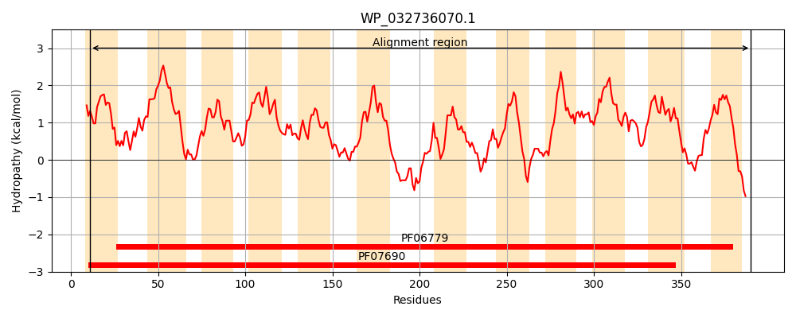
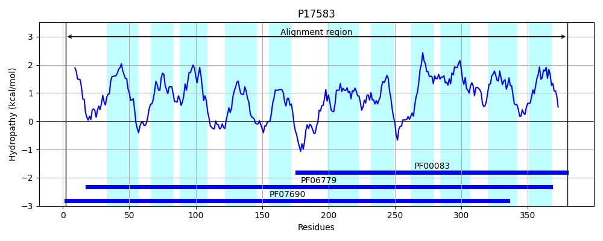
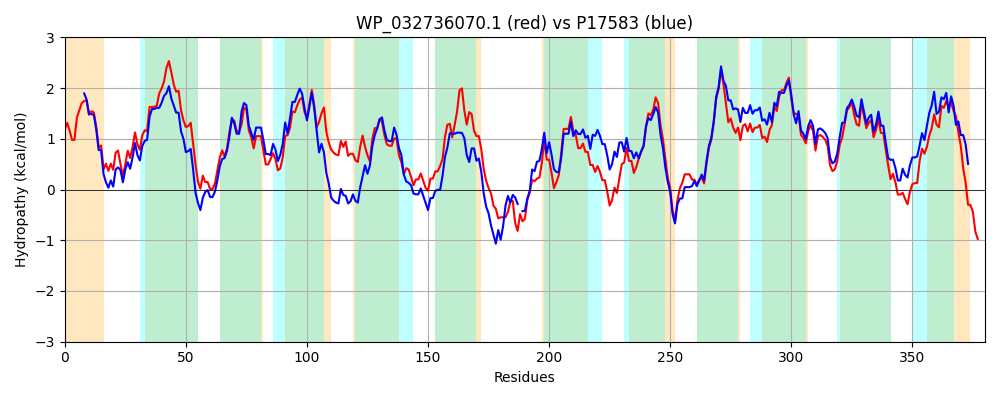

Hit Accession: P17583
Hit TCID: 2.A.1.17.1
Hit Description: gnl|BL_ORD_ID|9252 gnl|TC-DB|P17583|2.A.1.17.1 Cyanate transport protein cynX - Escherichia coli.
Mach Len: 380
e:0.000000
Query TMS Count : 12
Hit TMS Count: 11
TMS-Overlap Score: 9.850000
Predicted Substrates:CHEBI:23419;cyanate
BLAST Alignment:
Score: 1390 , Bit scores: 540 bits, E-value: 0.0e+00, Alignment length: 380, Percentage identity: 68
Query: 11 LCVLVLIGINMRPLLTSIGPLLPDIRAASGMSYTLVALLTALPVIAMGVLALAGGWVDRTVGQNRSIALSLLIIAAGALLRESAPHSGLLLSSALAGGIGIGIIQAAIPAVIKRLFARRMPLVMGLWSAALMGGGGLGAAFTPWLASRSTVWHQALAWWALPALLALLGWLAICRQLPRAPHQTSASPRVAIIGQRRAWTLGLYFGLINAGYASLIAWLPPYYIQLGDSAQYSGSLLALLTVGQTAGALLLPALARQDDRRQLLLFALALQLIGFCGFIWLPQHVPALWAIACGVGLGGAFPLCLVLALDHAGQPAVAGRLVAFMQGIGFIIAGLSPWLSGLLRSLSGNYTLDWSWHALCVLLLMALTLRFIPAHYPAEW 390
L VLVLIG+NMRPLLTS+GPLLP +R ASGMS+++ ALLTALPV+ MG LALAG W+ + V + RS+A+SLL+IA GAL+RE P S LLLSSAL GG+GIGIIQA +P+VIKR F +R PLVMGLWSAALMGGGGLGAA TPWL S W+Q LAWWALPA++AL W + + H+T+ +P V ++ RAWTLG+YFGLIN GYASLIAWLP +YI++G SAQYSGSLLAL+T+GQ AGALL+PA+AR DRR+LL+ AL LQL+GFCGFIWLP +P LWA+ CG+GLGGAFPLCL+LALDH+ QPA+AG+LVAFMQGIGFIIAGL+PW SG+LRS+SGNY +DW++HALCV+ LM +TLRF P +P W
Sbjct: 2 LLVLVLIGLNMRPLLTSVGPLLPQLRQASGMSFSVAALLTALPVVTMGGLALAGSWLHQHVSERRSVAISLLLIAVGALMRELYPQSALLLSSALLGGVGIGIIQAVMPSVIKRRFQQRTPLVMGLWSAALMGGGGLGAAITPWLVQHSETWYQTLAWWALPAVVALFAWWWQSAREVASSHKTTTTP-VRVVFTPRAWTLGVYFGLINGGYASLIAWLPAFYIEIGASAQYSGSLLALMTLGQAAGALLMPAMARHQDRRKLLMLALVLQLVGFCGFIWLPMQLPVLWAMVCGLGLGGAFPLCLLLALDHSVQPAIAGKLVAFMQGIGFIIAGLAPWFSGVLRSISGNYLMDWAFHALCVVGLMIITLRFAPVRFPQLW 380 | Protein Hydropathy Plots: |
|---|
|  |  |
Pairwise Alignment-Hydropathy Plot:
|
|---|
|  |